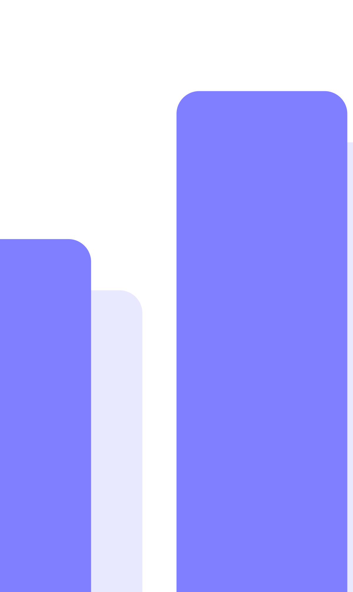
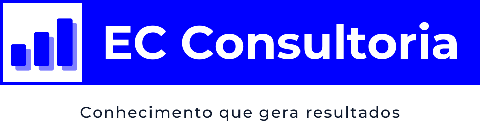
Logotipo, cores, tipografia, linguagem visual e aplicações da EC Consultoria.
A EC Consultoria é um escritório de contabilidade e consultoria em Vitória (ES), que atende empresas e pessoas físicas na Grande Vitória e em todo o Brasil.
O símbolo é um gráfico de três barras ascendentes: crescimento contínuo, construído degrau por degrau. A sombra deslocada dá profundidade e representa a base sólida de informação por trás de cada número.
A faixa azul funciona como uma etiqueta: direta, legível e reconhecível de longe. O azul puro é a cor mais forte da marca e deve estar presente sempre que possível.
A assinatura “Conhecimento que gera resultados” resume a promessa da EC: técnica contábil a serviço do resultado do cliente.
Preferencial. Use em cabeçalhos, site, documentos, papelaria e qualquer espaço mais largo do que alto.
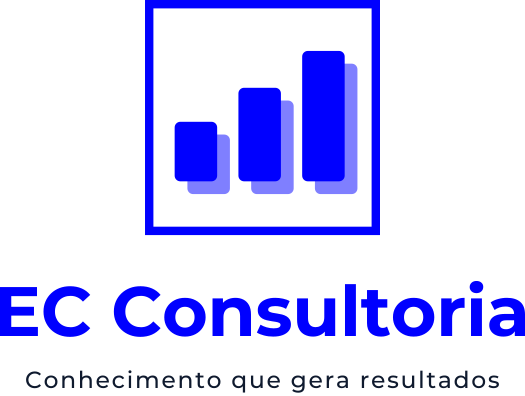
Para espaços quadrados ou altos: capas, banners verticais, brindes, fachada estreita.
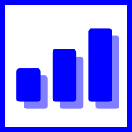
Avatar de redes sociais, favicon, ícone de aplicativo. Só quando o nome já estiver presente no contexto.
Com ou sem assinatura. A frase “Conhecimento que gera resultados” acompanha o logotipo em peças institucionais. Retire-a quando o logo ficar abaixo do tamanho mínimo com assinatura (ver página 05) ou em espaços muito estreitos.
Texto vetorizado. Em todos os arquivos o nome e a assinatura estão convertidos em curvas: os arquivos abrem iguais em qualquer computador, sem precisar da fonte instalada.
Unidade X = altura da faixa azul. Todas as medidas derivam dela.
Área de proteção: mantenha pelo menos ½X livre em todos os lados. Nenhum texto, imagem ou borda pode invadir esse espaço.
Abaixo destes tamanhos o nome ou a assinatura deixam de ser legíveis. Medidas pela largura total do logotipo.
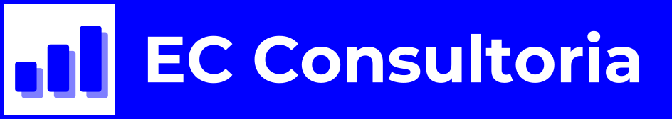
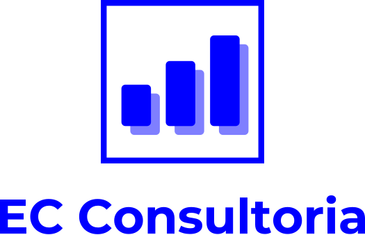
Para tamanhos de 16 a 32 px (favicon), use o ícone com cantos arredondados já publicado no site (public/favicon.svg), que tem barras ajustadas para telas pequenas.
HEX #0000FFRGB 0 · 0 · 255CMYK 100 · 80 · 0 · 0*Pantone 2728 C*HEX #7F7FFFRGB 127 · 127 · 255CMYK 50 · 40 · 0 · 0*Azul EC a 50%HEX #0F1A2ERGB 15 · 26 · 46CMYK 90 · 75 · 45 · 65*Textos e assinatura#FFFFFF#F4F6FA · fundos#E8E8FF · realces#E0A82E · destaque pontualAzul EC, Azul Sombra, Tinta e Branco são as cores do logotipo. Névoa, Lavanda e Âmbar são cores de apoio (site, apresentações, gráficos); o Âmbar nunca é aplicado ao logotipo.
* O azul puro de tela (#0000FF) fica fora do espaço de cor da impressão; os valores CMYK e Pantone são a aproximação mais próxima. Peça prova de cor à gráfica antes de imprimir tiragens grandes.
Bold 700 — nome “EC Consultoria”, títulos de peças · Medium 500 — assinatura, subtítulos
Regular 400 / Semibold 600 — textos corridos, propostas, relatórios, e-mails e o site.
Tabelas, valores, datas e vencimentos: algarismos com mesma largura.
Onde não for possível instalar as fontes (Word, Outlook, PowerPoint em máquinas de terceiros) use Segoe UI ou Arial. Todas as fontes acima são gratuitas no Google Fonts (licença OFL).
O logotipo assina; a linguagem visual é o que torna uma peça da EC reconhecível mesmo sem ele. São cinco recursos, todos tirados do próprio logo: a faixa, a sombra deslocada, as barras, o quadrado e o crescimento.
A faixa do logo vira marcador de título. Palavras-chave entram em tarjas azuis.
A sombra do símbolo se aplica a números, blocos e fotos: tudo tem um eco deslocado.
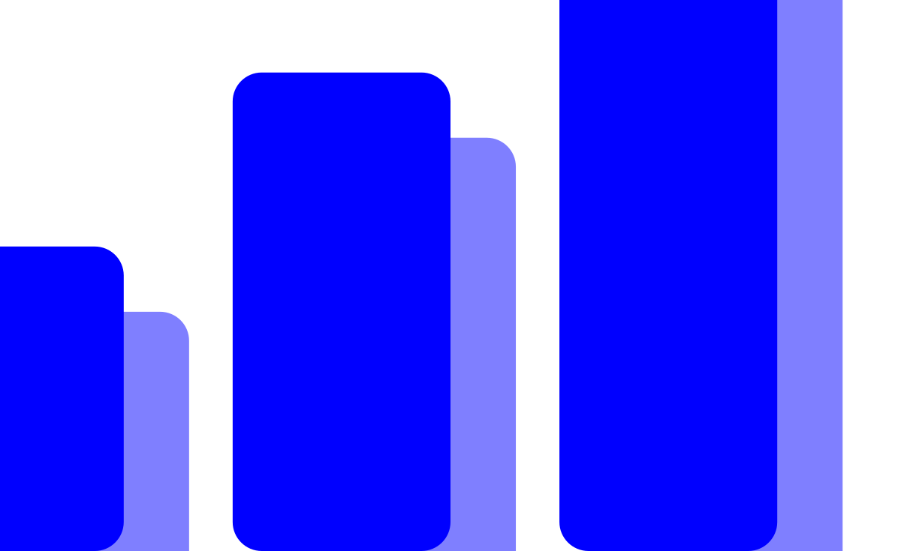
O símbolo ampliado até virar paisagem. Só fragmentos aparecem, sempre sangrando.
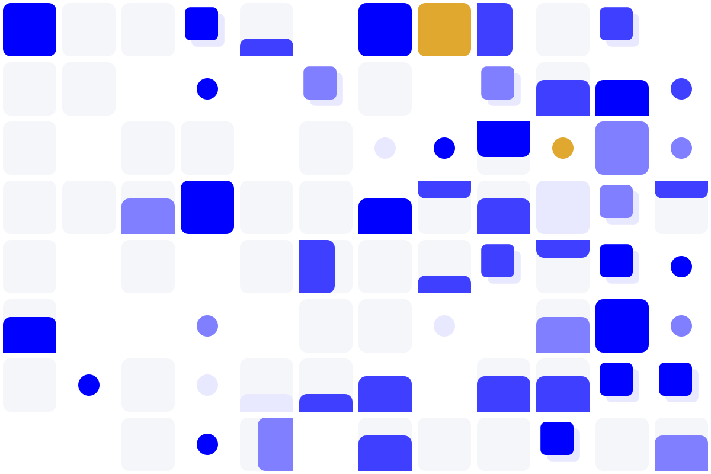
O quadrado do símbolo como módulo: medidores, ecos e pontos que se adensam para a direita.
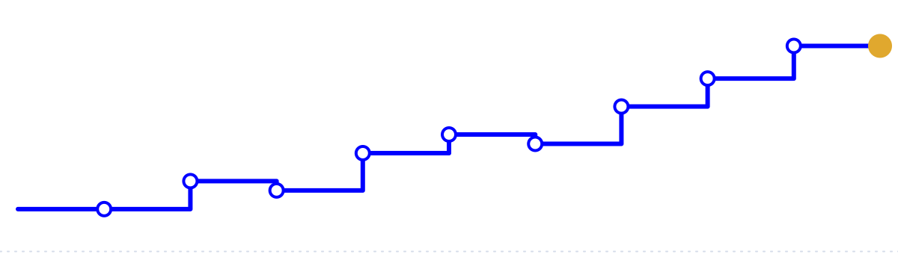
Uma trajetória em degraus que fecha para cima, terminando no ponto âmbar.
Recorte. Amplie o símbolo de 4 a 12 vezes e enquadre só um trecho. As barras sempre encostam em pelo menos uma borda da peça. Use um recorte por peça, ocupando de um terço à metade da área.
Mosaico. Módulos quadrados com medidores de ⅓, ⅔ ou cheio, ecos e pontos. Fica mais denso da esquerda para a direita. Use como faixa, metade da peça ou, na versão marca d’água, atrás de texto.
Linha em degraus (só horizontais e verticais), traço de 0,5% da largura, marcadores vazados e o ponto âmbar no fim. Funciona sozinha como grafismo ou com dados reais em relatórios.
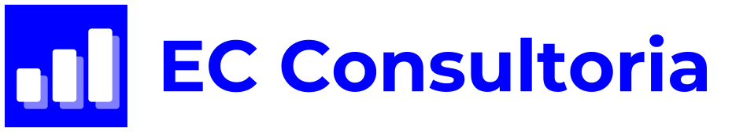
Hierarquia. Em cada peça, um recurso protagonista (recorte, mosaico ou linha) e um recurso tipográfico (tarja ou eco). Mais do que isso vira ruído.
Equilíbrio de cor. Peças claras: 70% branco ou Névoa, 25% azuis, até 5% Âmbar. Peças azuis: o grafismo em branco e tons, nunca em Âmbar extenso.
Logotipo. Sempre fora do grafismo, com a área de proteção livre, em um canto superior ou inferior esquerdo.
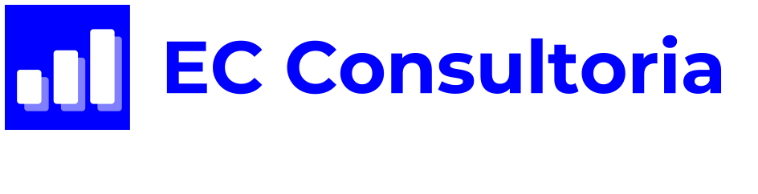
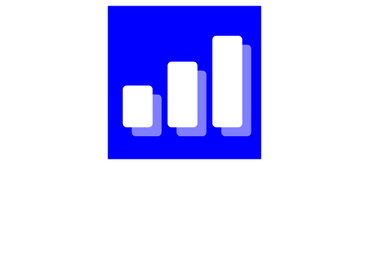
As versões preto e branco são de uma cor só, com o quadrado e o nome vazados: servem para carimbo, gravação a laser, recorte em vinil, bordado e impressão em 1 cor. Sobre fotos, use áreas escuras e uniformes da imagem.
Não distorcer, achatar ou esticar.
Não trocar as cores da marca.
Não girar nem inclinar.
Não aplicar sombras, brilhos ou contornos.
Não redesenhar o nome com outra fonte.
Não usar sobre fundos poluídos ou sem contraste.
Não usar a versão positiva sobre o Azul EC: a faixa desaparece.
Não reorganizar elementos nem mudar proporções.
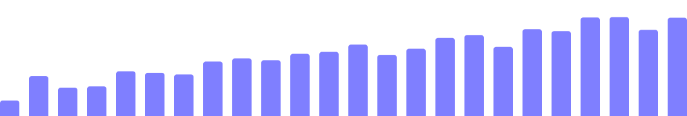
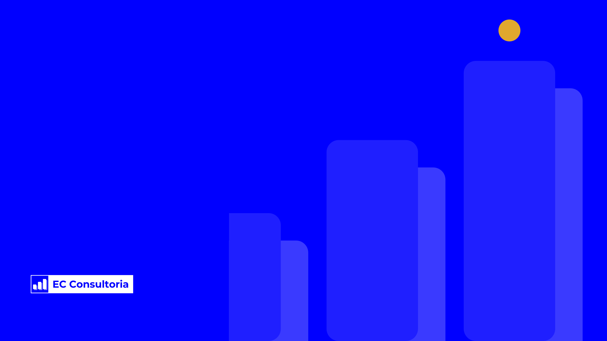
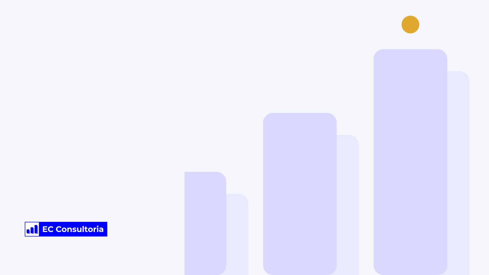
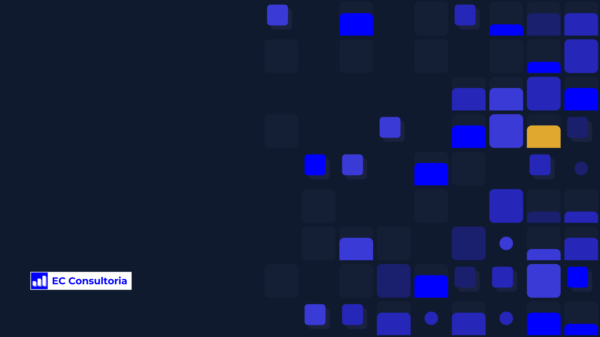
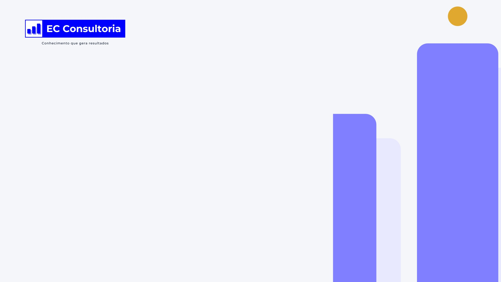
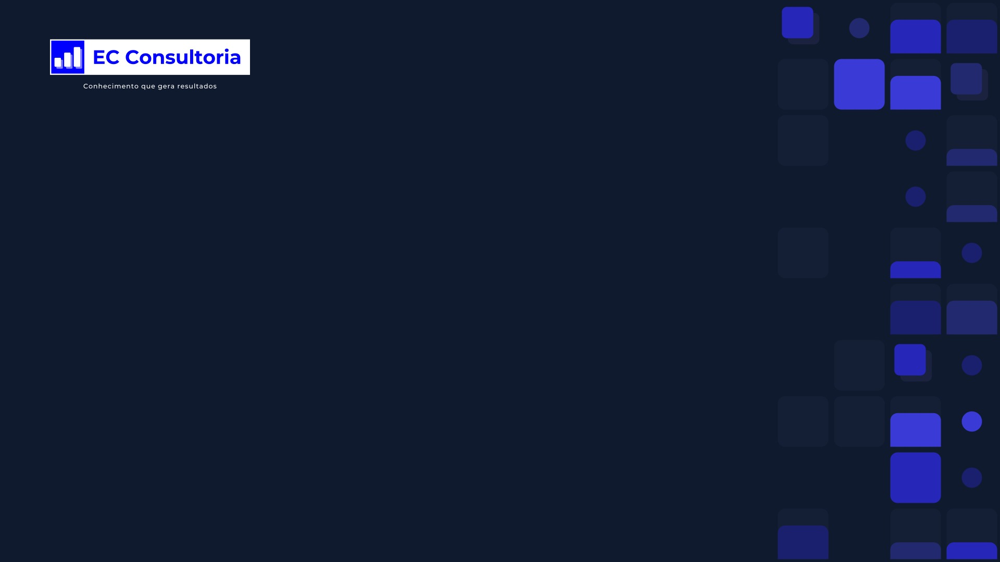
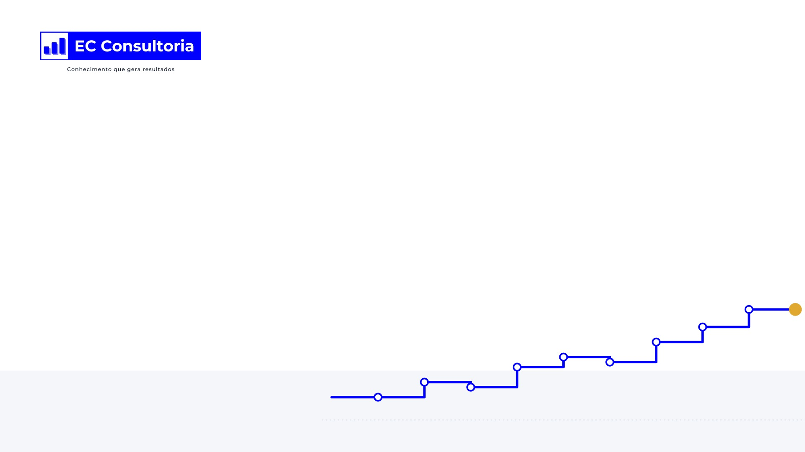
Área de trabalho. Em Full HD, QHD, 4K e ultrawide (pasta aplicacoes/area-de-trabalho). O grafismo fica à direita e o logo embaixo à esquerda, longe dos ícones e acima da barra de tarefas.
Videochamada. 1920 × 1080 para Google Meet e Microsoft Teams (pasta aplicacoes/videochamada). O centro fica livre para a pessoa e o logo no alto à esquerda. Sem Azul EC em área grande: em tela cheia ele cansa a vista. Na sua própria tela a imagem aparece espelhada, mas os participantes veem o logo do jeito certo.
Arquivos em logos/animada, em duas versões: loop (telas, TV da recepção, site) e abertura (toca uma vez e para no logo completo, para vídeos e apresentações). Cada uma em SVG animado, GIF e WebP com fundo transparente. Movimento com curvas de aceleração suaves, a 50 quadros por segundo.
assinatura-email.html: preencha os dados e clique em Copiar assinatura.ec-consultoria.com/marca/email. As barras “respiram” (descem e voltam com mola) três vezes e o logo para completo.| Arquivo | Uso |
|---|---|
ec-horizontal-{cor|negativo|preto|branco}.svg | Logo principal, sem assinatura |
ec-horizontal-…-assinatura.svg | Logo principal com “Conhecimento que gera resultados” |
ec-vertical-{cor|negativo|preto|branco}.svg | Logo vertical, sem assinatura |
ec-vertical-…-assinatura.svg | Logo vertical com assinatura |
ec-simbolo-{cor|negativo|preto|branco}.svg | Símbolo isolado |
ec-icone-app.svg | Avatar e ícone de aplicativo (512 × 512) |
grafismos/degraus-{cor|branco|tons}.svg | Barras ascendentes (marcador, rodapé) |
grafismos/horizonte-{lavanda|azul|sombra}.svg | Faixa de barras para rodapés e bases |
grafismos/pauta-{clara|azul}.svg | Textura de livro-razão |
grafismos/recorte-{topo|escada|vertical}-{cor|tons|branco}.svg | Recortes ampliados do símbolo |
grafismos/mosaico-{claro|azul|mono}.svg | Mosaico modular |
grafismos/linha-resultado-{azul|branco}.svg | Linha de resultado |
logos/animada/ec-logo-animada-{loop|abertura}.{svg|gif|webp} | Logo animada |
aplicacoes/area-de-trabalho/*.png | Fundos de tela, 3 versões × 4 tamanhos |
aplicacoes/videochamada/*.jpg | Fundos para Meet e Teams |
assinatura-email.html | Gerador da assinatura de e-mail |
Pasta logos/svg — arquivos vetoriais, com o texto convertido em curvas. Use para gráfica, sinalização, brindes, recorte e bordado. Abrem no Illustrator, Inkscape, CorelDRAW, Figma e Canva.
Pasta grafismos — elementos gráficos em SVG e PNG, nas mesmas cores da marca.
Pasta logos/png — as mesmas versões em PNG com fundo transparente (2400 px de largura; símbolos com 1024 px). Use em Word, PowerPoint, redes sociais e e-mail.
Precisa de PDF, EPS ou outro formato? Abra o SVG no Illustrator ou Inkscape e salve no formato pedido pela gráfica; nada se perde, pois o arquivo já é vetorial.
Dúvidas sobre o uso da marca: contato@ec-consultoria.com